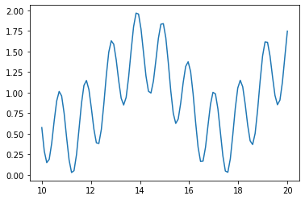
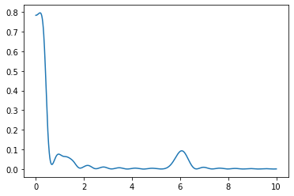
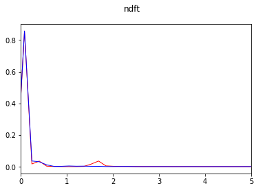
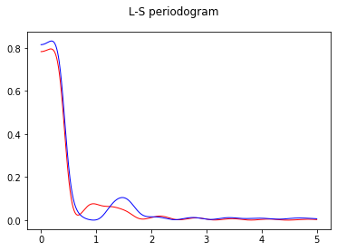
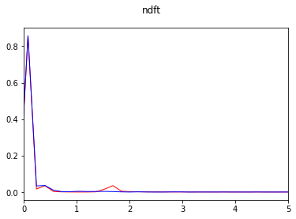
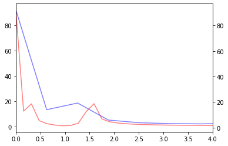
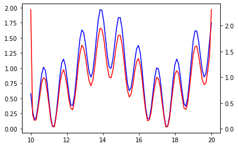
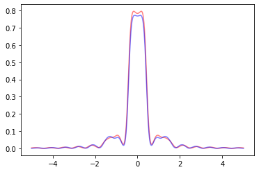

PSD tests¶
Some tests to clarify how to calculate the PSD of a signal, randomize it and which results to expect.
UPDATE: OH MY GOODNESS I have been using the wrong method for computing the PSD all this time along, since Welch’s method can only be used for evenly sampled signals. From now on use the Lomb-Scargle periodogram. We also have to use Non-Unifrom Fourier Transform (NFT).
[1]:
# I'm doing a lot of changes to MUTIS while writting this, better reload automatically.
%load_ext autoreload
%autoreload 2
[2]:
import numpy as np
from numpy import pi as pi
import scipy as sp
import scipy.signal
import matplotlib as mplt
import matplotlib.pyplot as plt
import mutis
import nfft # non uniform fourier transform
import traceback
Using NFT and Lomb-Scargle periodogram.¶
[3]:
t = np.linspace(10,20,100)
s = 0.5*np.sin(1*t) +0.5*np.sin(6*t)+1
plt.plot(t,s)
[3]:
[<matplotlib.lines.Line2D at 0x7fa070637910>]

[4]:
freqs = np.linspace(1e-3,10,1000)
sxx = sp.signal.lombscargle(x=t, y=s, freqs=freqs, normalize=True)
fig, ax = plt.subplots()
ax.plot(freqs, sxx)
plt.show()

[ ]:
[5]:
"""
def lc_gen_psd_lombscargle(t, sig, pl2, N=None):
sigp = sig
tp = t
if sig.size % 2 != 0:
print('Odd number')
sigp = sig[:-1]
tp = t[:-1]
else:
sigp = sig
tp = t
N = sigp.size
#k = np.arange(-N/2,N/2) no bc sp.signal.lombscargle does not support freq zero:
k = np.linspace(-N/2,N/2-1+1e-6,N)
freqs = k/2/pi
Pxx = sp.signal.lombscargle(tp, sigp, freqs)
# construct random phase to get real signal:
phase = np.random.random(Pxx.size//2)
phase = np.concatenate((-np.flip(phase),[0], phase[:-1]))
fft2 = np.sqrt(2*Pxx*Pxx.size)*np.exp(1j*2*pi*phase)
sig2 = nfft.nfft((t-(t.max()+t.min())/2)/np.ptp(t), fft2, N, use_fft=True)/N
#return sig2
#fix small deviations
a = (sig.std()/sig2.std())
b = sig.mean()-a*sig2.mean()
sig2 = a*sig2+b
return sig2
def lc_gen_psd_nft(t, sig, pl2, N=None):
k = np.arange(-t.size//2, t.size/2)
N = k.size
freqs = k/2/pi
nft = nfft.nfft_adjoint((t-(t.max()+t.min())/2)/np.ptp(t), sig, N, use_fft=True)
# construct random phase to get real signal:
phase = np.random.random(N.size//2)
phase = np.concatenate((-np.flip(phase),[0],phase[:-1]))
fft2 = np.abs(nft)*np.exp(1j*2*pi*phase)
sig2 = nfft.nfft((t-(t.max()+t.min())/2)/np.ptp(t), fft2, use_fft=True)/N
#return sig2
sig2 = np.real(sig2) # np.real to fix small imaginary part from numerical error
# fix small mean, std difference from numerical error
a = (sig.std()/sig2.std())
b = sig.mean()-a*sig2.mean()
sig2 = a*sig2+b
return sig2
""";
[6]:
fig, ax = plt.subplots()
ax.plot(t,s,'b-', lw=1, alpha=0.2, label='orig')
#try:
s2 = mutis.lc_gen_psd_lombscargle(t,s,None)
ax.plot(t,s2, 'r-', lw=1, alpha=0.8, label='nufft LS')
s4 = mutis.lc_gen_psd_nft(t,s,None)
ax.plot(t,s4, 'k-', lw=1, alpha=0.8, label='nufft nfft')
s3 = mutis.lc_gen_psd_fft(None,s,None)
ax.plot(t,s3, 'm-', lw=1, alpha=0.6, label='fft')
ax.legend()
fig.show()
print(np.mean(s))
print(np.mean(s2))
print(np.sum(np.imag(s2)>0.3))
0.9258046721637005
(0.9258046721637007-3.469446951953614e-20j)
0
/Users/juan/miniconda3/lib/python3.8/site-packages/numpy/core/_asarray.py:102: ComplexWarning: Casting complex values to real discards the imaginary part
return array(a, dtype, copy=False, order=order)
/Users/juan/miniconda3/lib/python3.8/site-packages/scipy/signal/spectral.py:1961: UserWarning: nperseg = 256 is greater than input length = 100, using nperseg = 100
warnings.warn('nperseg = {0:d} is greater than input length '
<ipython-input-6-c869ed589a23>:16: UserWarning: Matplotlib is currently using module://ipykernel.pylab.backend_inline, which is a non-GUI backend, so cannot show the figure.
fig.show()

[7]:
freqs = np.linspace(1e-3,5,1000)
sxx = sp.signal.lombscargle(x=t, y=s, freqs=freqs, normalize=True)
sxx2 = sp.signal.lombscargle(x=t, y=s2, freqs=freqs, normalize=True)
fig, ax = plt.subplots()
ax.plot(freqs, sxx, 'r-', lw=1)
ax.plot(freqs, sxx2, 'b-', lw=1)
fig.suptitle('L-S periodogram')
fig.show()
fig, ax = plt.subplots()
N = s.size
#k = -(N // 2) + np.arange(N)
k = np.linspace(-s.size/2,s.size/2,N)
freqs = k/2/pi
nft = nfft.nfft_adjoint((t-(t.max()+t.min())/2)/np.ptp(t), s, N, use_fft=True)/N
Pxx = np.abs(nft)**2
#idx = np.argsort(freqs)
#freqs = freqs[idx]
#Pxx = Pxx[idx]
#Pxx = sp.fft.ifftshift(Pxx)
#freqs = np.linspace(-0.5, 0.5, N, endpoint=True)*2*pi*4
ax.plot(freqs,Pxx, 'r-', lw=1)
##########
N = s2.size
#k = -(N // 2) + np.arange(N)
k = np.linspace(-s2.size/2,s2.size/2,N)
freqs = k/2/pi
nft = nfft.nfft_adjoint((t-(t.max()+t.min())/2)/np.ptp(t), s2, N, use_fft=True)/N
Pxx = np.abs(nft)**2
#idx = np.argsort(freqs)
#freqs = freqs[idx]
#Pxx = Pxx[idx]
#Pxx = sp.fft.ifftshift(Pxx)
#freqs = np.linspace(-0.5, 0.5, N, endpoint=True)*2*pi*4
ax.plot(freqs,Pxx, 'b-', lw=1)
##########
ax.set_xlim([0, 5])
fig.suptitle('ndft')
fig.show()
/Users/juan/miniconda3/lib/python3.8/site-packages/numpy/core/_asarray.py:102: ComplexWarning: Casting complex values to real discards the imaginary part
return array(a, dtype, copy=False, order=order)
<ipython-input-7-e35e392ead9c>:10: UserWarning: Matplotlib is currently using module://ipykernel.pylab.backend_inline, which is a non-GUI backend, so cannot show the figure.
fig.show()
<ipython-input-7-e35e392ead9c>:48: UserWarning: Matplotlib is currently using module://ipykernel.pylab.backend_inline, which is a non-GUI backend, so cannot show the figure.
fig.show()


[ ]:
[ ]:
FT and iFT with NDFT¶
[8]:
N = s.size
k = -(N // 2) + np.arange(N)
freqs = k/2/pi
nft = nfft.nfft_adjoint((t-(t.max()+t.min())/2)/np.ptp(t), s, N, use_fft=True)
ft = sp.fft.fft(s)
plt.plot(2*pi*np.arange(0,t.size)/np.ptp(t), np.abs(ft), 'b', alpha=0.5)
plt.gca().twinx()
plt.plot(freqs, np.abs(nft), 'r', alpha=0.5)
plt.xlim([0,4])
[8]:
(0.0, 4.0)

[9]:
s2nft = 1/N*nfft.nfft((t-(t.max()+t.min())/2)/np.ptp(t), nft, use_fft=True)
s2ft = sp.fft.ifft(ft)
plt.plot(t, s2ft, 'b')
plt.gca().twinx()
plt.plot(t, s2nft, 'r')
/Users/juan/miniconda3/lib/python3.8/site-packages/numpy/core/_asarray.py:102: ComplexWarning: Casting complex values to real discards the imaginary part
return array(a, dtype, copy=False, order=order)
/Users/juan/miniconda3/lib/python3.8/site-packages/numpy/core/_asarray.py:102: ComplexWarning: Casting complex values to real discards the imaginary part
return array(a, dtype, copy=False, order=order)
[9]:
[<matplotlib.lines.Line2D at 0x7fa071729fa0>]

[10]:
freqs = np.linspace(-5,+5,1000)
sxx_ft = sp.signal.lombscargle(x=t, y=s2ft, freqs=freqs, normalize=True)
sxx_nft = sp.signal.lombscargle(x=t, y=s2nft, freqs=freqs, normalize=True)
fig, ax = plt.subplots()
ax.plot(freqs, sxx_ft, 'r-', alpha=0.5)
ax.plot(freqs, sxx_nft, 'b-', alpha=0.5)
plt.show()

[ ]:
[ ]:
[ ]: